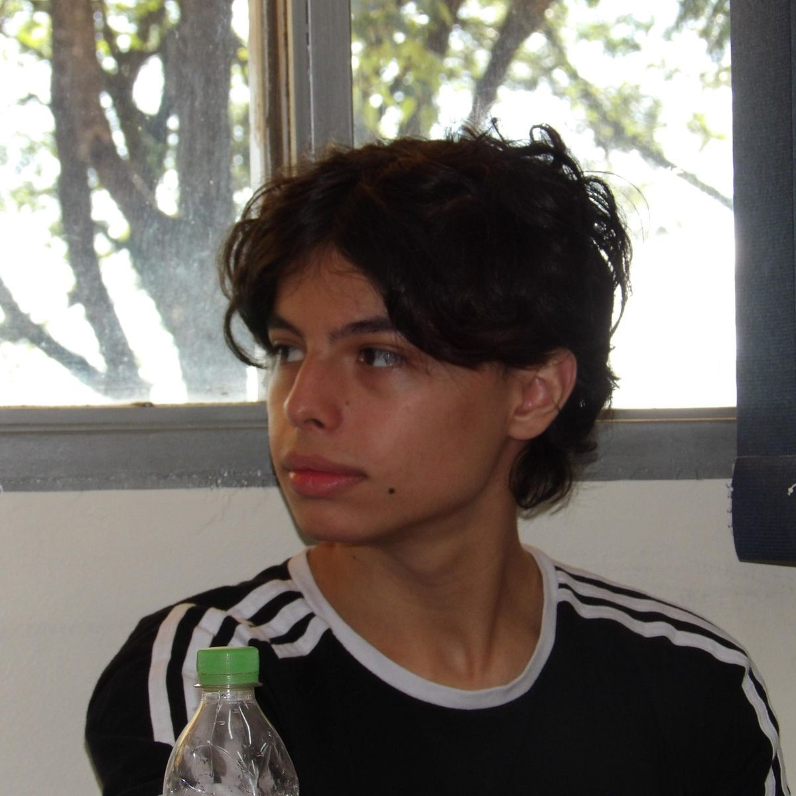

Sobre Mim

Minha Trajetória
Meu nome é Mateus Rocha Camargo e sou estudante de Ciência da Computação na Universidade de Passo Fundo (UPF). Cursei o ensino médio no Integrado como bolsista integral e, hoje, sou bolsista 100% do ProUni graças ao meu desempenho no ENEM de 2025.
Atualmente, atuo como monitor volante no projeto Tempo Integral, onde ajudamos crianças de bairros vulneráveis a se conectarem com a educação e a alcançarem melhores oportunidades de vida.
Busco me aprimorar no desenvolvimento Front-end e Back-end, e tenho grande interesse em projetos de pesquisa e oportunidades de estágio na área de tecnologia.